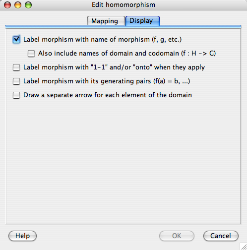
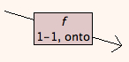

If you double-click on a homomorphism in a sheet, you will be presented with the homomorphism edit window. This window has two tabs, one for editing the mathematical content of the homomorphism, and the other for editing the visual representation of the homomorphism. These two tabs are discussed below, in that order.
The first tab of the homomorphism edit window allows you to specify the homomorphism as a function, a map, from one group to another. It looks like this.
There are controls and pieces of information worth noting here.
The text at the top of the window below the tabs gives you information about which homomorphism you are editing. The homomorphism corresponding to the window shown above is named f and maps a visualizer for the group D4 to another visualizer for that same group.
The elements in the list for the Domain are all those elements outside the subgroup generated by the set of elements whose images have already been chosen. This is because knowing the image of generators in a group determines the images of all elements in the subgroup they generate. Not listing elements whose images have already been (indirectly) determined by previous choices helps prevents the user from defining functions which are not homomorphisms.
The elements in the list for the Codomain are all those elements which could be mapped to by the currently selected element of the domain. Note that in the window shown above, no element of the domain is currently selected. (Clicking an element of the domain would highlight it, indicating that it is selected.) Therefore no elements are listed in the codomain list box. An element c in the codomain shows up when an element d in the domain is selected if there exists at least one homomorphism that matches all pairs chosen so far (see immediately below) and which maps d to c. This, too, helps prevent the user from defining functions which are not homomorphisms.
With these two safeguards in place, all maps definable using the controls on the homomorphism edit window are actually homomorphisms.
This section of the window lists all pairs of elements d in the domain and c in the codomain which have been added to the homomorphism already. Note that in the window shown above, the user has chosen to map the element r in the domain to the element e in the codomain, and thus the expression f( r ) = e is written in the "Pairs in the map" section.
The user accomplished this pairing by highlighting r in the domain and e in the codomain, and clicking the ">-Map->" button. To remove this pair from the map, click the "Remove" button next to it.
As mentioned above, the user may only choose pairs that generate the homomorphism; other pairs are determined indirectly by the definition of a homomorphism. If you wish to see the full mapping, click the "Show whole map" button.
The help button on the bottom left brings up this help page.
The OK button in the window pictured above is grayed out and unusable. This is because the user has not determined the homomorphism fully; it is under construction. All elements of the domain must be mapped to elements of the codomain before the changes can be committed with the OK button. The exception to this rule is that if no elements of the domain have been mapped, Group Explorer assumes the zero morphism (the one which maps all elements to the identity of the codomain group).
The Cancel button closes the window without changing the morphism in question at all. The next time you go to edit the moprhism, the window will reflect its former state, with none of your canceled changes visible.
The second tab of the homomorphism edit window allows you to customize the appearance of the homomorphism as an object in a sheet. It looks like this.

| This box is checked by default, and superimposes a small rectangular label on the morphism arrow in the sheet, as shown to the right. Without this box checked, the morphism is simply an arrow. |  |
| If the checkbox beneath this one, "Also include names of domain and codomain (f : H -> G)," is checked, then the label will be slightly larger, including the specified information, as shown to the right. |  |
| This box is not checked by default, but when checked, it augments the label with either or both of the phrases "1-1" or "onto," if the morphism is injective or surjective, respectively. To the right is pictured a morphism arrow decorated with both such flags. |  |
| This box is not checked by default, but when checked, it augments the label with a list of all generating pairs, as in the "Mapping" portion of the window, above. See the example to the right. |  |
| This box is not checked by default, but when checked, it replaces the single arrow of the morphism with several arrows, one for each element of the domain. The source of these arrows is dependent on the visualizer; for instance, in the multiplication table to the right, the left column of the multiplication table is used. (Right-clicking on a multiplication table allows you to change it to use the top row instead.) The endpoint of the arrows is determined by the map; in the example to the right, the map z is the zero map, mapping all elements to the identity. |  |
Quick help links:
Contents | Getting Started | Tutorials | User Manual | Miscellaneous Reference
GE terminology | Help on help